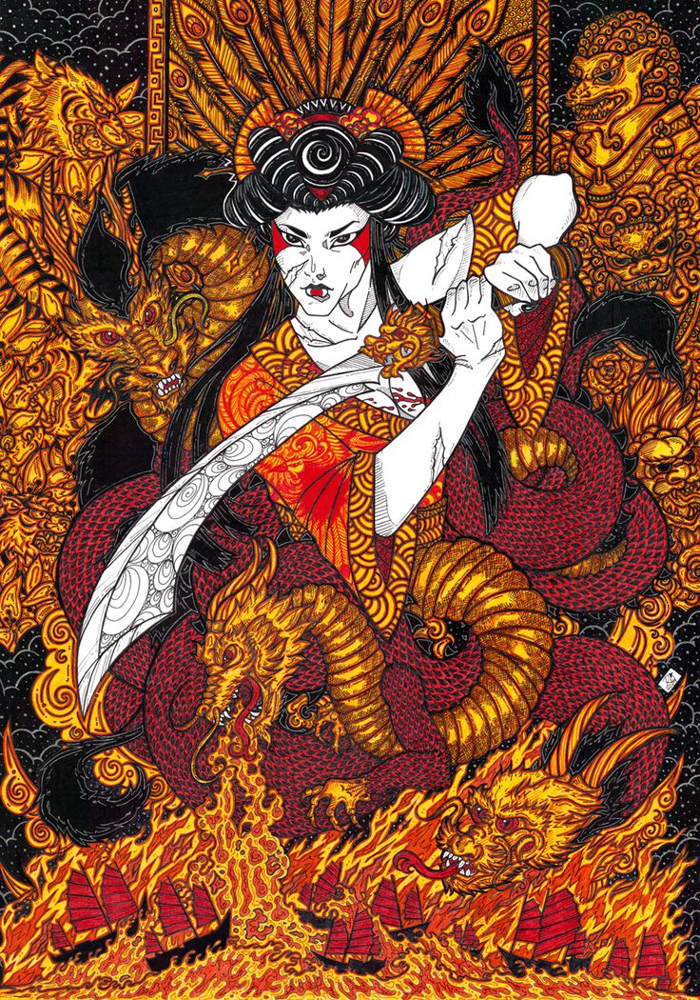
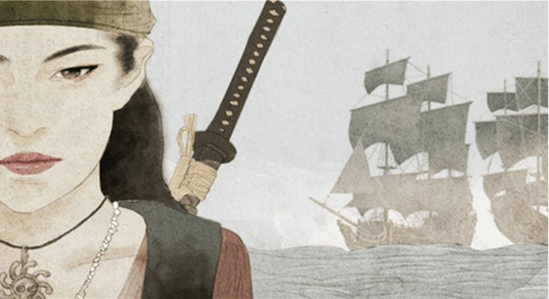

Ching Shih
The Greatest Pirate There Ever Was
Very little is truly known about Ching Shih's early life. Historians do know that she was born named Shi Xiang Gu in the Guangdong province of China in 1775. She became a prostitute and worked in a floating brothel in Canton. There are various accounts of how Ching Shih ended up with her husband, Pirate Cheng I, who commanded a fleet of ships called the "Red Flag Fleet." It was in 1801 that he noticed her beauty and wished to be with her. Some say Cheng I sent a group of men and ordered them to plunder the brothel, and then bring him Ching Shih. The men did as they were told, and the two were then married. Other accounts suggest that Cheng I simply asked Ching Shih to marry him and she agreed, as long as she would have some power within his fleet and would receive an equal share. So, the two began running the Red Flag Fleet together. Following their marriage, Ching Shih adopted her husband's son Cheung Po as her step-son and she bored him two sons, Cheng Ying Shi and Cheng Xiong Shi. By 1804, the Red Flag Fleet was one in the most powerful pirate fleets in China.
In November of 1807, Cheng I died in Vietnam. Instead of stepping aside, Ching Shih immediately began to maneuver her way into his position as leader. She acted to solidify the partnership with her step-son, Cheung Po, and he became her second-in-command. In order to stop her rivals and open conflict, she gained the support of the most powerful members of her husband's family: his nephew and his cousin's son. Then, she drew from to organization formed by Cheng I, by building upon the existing loyalties of her husband's captains and making herself essential to them.
While Cheung Po led men into battle, Ching Shih paid attention to the business, military strategies, and the task of governing an increasing number of men. In the few years following her husband's death, Ching Shih continued to add more and more outlaws under the thumb of the Red Flag Fleet. She was responsible for almost all of the piracy in the region and her fleet defied the size of the navies of various countries. Ching Shih's reach also extended to the mainland, where she had an incredible spy network and had developed economic connections with the farmers who supplied her men with their food.
Ching Shih's business talent may have been impressive, but her system of pirate law was revolutionary. Her laws were harsher than any previous pirate law. Anyone giving their own orders or disobeying the orders of a superior was beheaded immediately. Anyone who stole from the public fond or the common plunder was immediately beheaded. All good that were taken had to be presented for group inspection, the original seizer received twenty percent and the rest went into the public fund. Deserters stood trial to lose their ears. Ching Shih also had laws for taking female prisoners. Ugly women were released, no questions asked and for nothing in return. Attractive captives were auctioned off to the crew, unless a pirate personally purchased a captive, then they were considered married. If a pirate cheated on his wife, Ching Shih had him killed. If a pirate raped, they were killed. If a pirate had consensual sex with a captive, the pirate was beheaded and the woman would have cannonballs tied to her legs and then she was thrown overboard.
Eventually, such crimes as murder, thievery, and others will get the full attention of the law. So, of course, Ching Shih had the authorities following her, but she evaded everyone that was sent to capture her including the Chinese navy, Portuguese and British bounty hunters. Then, in 1810, the Chinese government offered her universal pirate amnesty in exchange for peace. Ching Shih arranged a great deal. Less than 400 of her men received any form of punishment. Only 126 were executed. The remaining pirates kept their loot and even received military jobs. This was out of 17,318 pirates.

Ching Shih and Cheung Po, her adopted son, asked the governor of Guangdong Zhang Bailing to dissolve ther mother/son relationship. After, Cheung Po and Ching Shih were married, even with the governor as a witness. In 1813, she gave birth to his son, and then would later have a daughter. Cheung Po died at sea in 1882, and Ching Shih moved the family back to her old hometown of Guangzhou. It was there that she opened a brothel and a gambling house. She died in bed surrounded by family in 1844, at the age of 69.